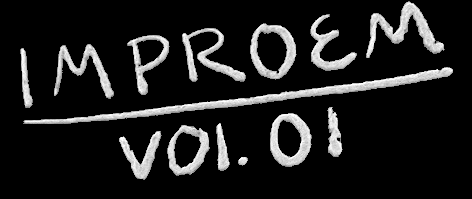
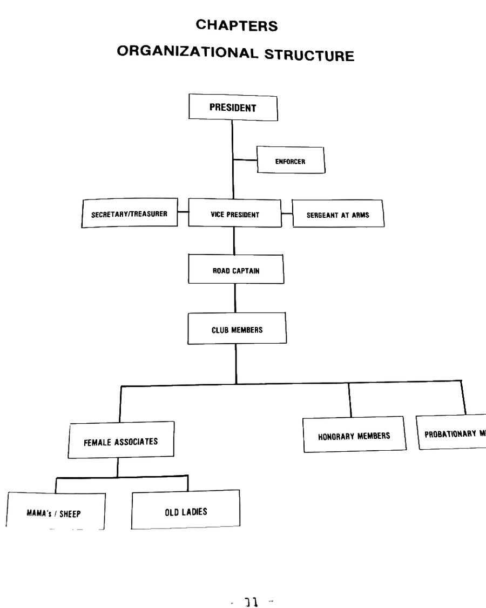

Index · every napkin by date, newest file first
Open file · in progress
VOL. 03
2026.10.28 –
1Poems
1Napkins
0Scribbled out
VOL. 02
2026.04.22 – 2026.10.14
17Poems
21Napkins
6Scribbled out
Previous file

2026.02.14 – 2026.04.15
8Poems
10Pages
1Scribbled out

END OF FILE
All napkins photographed as found. Cross-outs left in. Eyes redacted.
Keys: J next napkin · K previous · R random